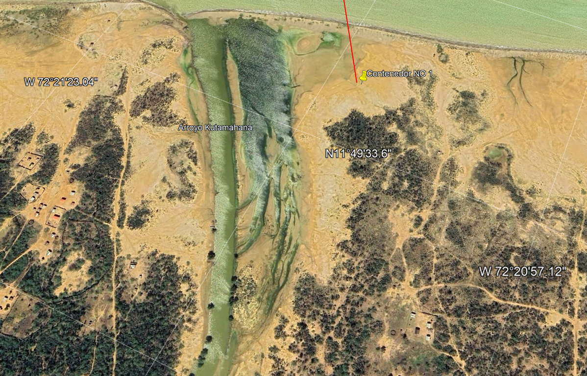
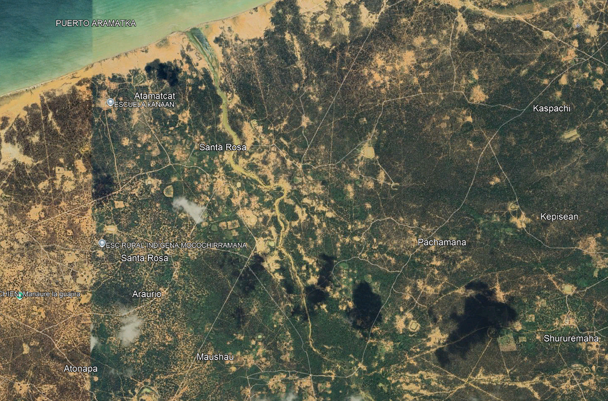
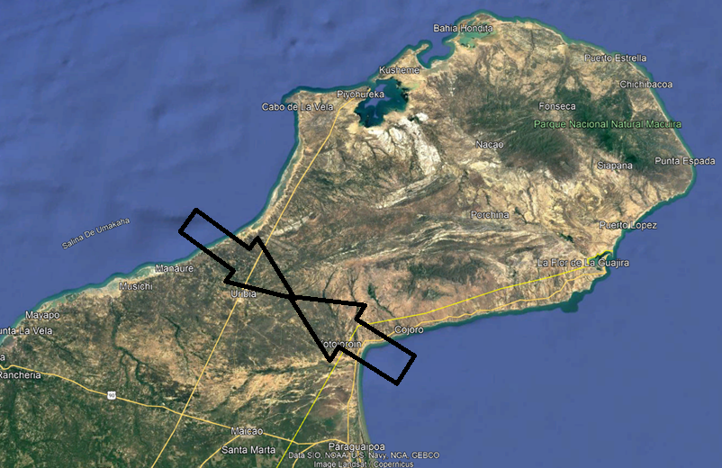

Fase I → Scaling
Scaling del Proyecto AQUA-8
De un contenedor a una red de autonomía hídrica para La Guajira
Visión de Escala
Agua para Todas las Comunidades
El proyecto AQUA-8 no termina en un contenedor. La visión de escalamiento consiste en instalar múltiples contenedores estratégicamente para abastecer a todas las comunidades Wayúu de la región.
Fase I (Piloto)
1
contenedor
3,000 L/d
150 personas
3,000 L/d
150 personas
Fase II
5
contenedores
15,000 L/d
750 personas
15,000 L/d
750 personas
Fase III
20
contenedores
60,000 L/d
3,000 personas
60,000 L/d
3,000 personas
Total
Red
completa desde Manaure
hasta el Golfo
de Morrosquillo
hasta el Golfo
de Morrosquillo

Ubicación Estratégica
Coordenadas de los Containeres
El proyecto se enfoca en la instalación del Container No 1 como piloto. Los demás contenedores se colocarán a lo largo del río de agua de mar, siguiendo la ruta de escalamiento costero.
- Container No 1 (Piloto): 11°49'37.67"N — 72°21'8.24"W
- Container No 2: 11°49'7.35"N — 72°21'1.42"W
- Zona de influencia: Uribia — cubierta por ambos frentes costeros
- Frente Atlántico: costa norte de La Guajira
- Golfo de Morrosquillo: acceso por el sur

Detalle Técnico
Configuración del Container Piloto
El Container No 1 integra todos los subsistemas validados en el diseño FEED: captación, pre-tratamiento, ósmosis inversa, post-tratamiento, energía solar y control SCADA.
- Container marítimo 20' reacondicionado
- System 100% solar — ~12 kWp
- Monitoreo remoto vía AQUA-CLOUD
- Sin baterías — VFD solar directo
- Salmuera a economía circular (salinas artesanales)
